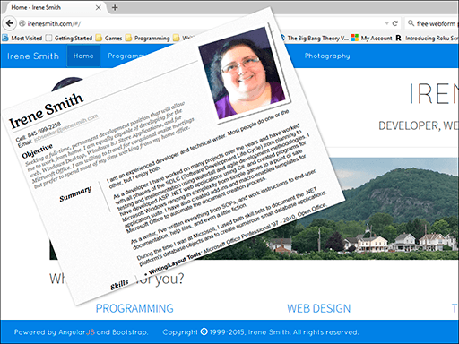

Web Development



I created my first website in 1997. I don't think it even exists in the Wayback machine because I didn't have my own domain. The site was created for the business my husband and I were running, called ComputerSmith. I have created many other websites for myself and others since then. Here are a few examples.
Sites I Own
| Project Title | Description |
|---|---|
| irenesmith.com | This website was created using HTML 5, CSS 3, and JavaScript. In creating this version of my website, I have also used the Bootstrap Framework. |
| "It's an Irene Thing" | My blog, a WordPress blog, which includes articles on a wide range of topics, including Windows, writing, and personal topics. |
| Irene P. Smith | This site is mostly HTML5 with CSS 3, with a little bit of PHP scripting. The information on this site deals mostly with the short stories and articles that I have written. |
Example jQuery Apps
| Project Title | Description |
|---|---|
| Stuff 2 Do | A simple jQuery app that tracks a list of tasks. The app saves tasks in local storage, and allows tasks to be added and updated. |
| Tipster | Another simple jQuery app that can be used to calculate the tip for a group of diners. This is actually a jQuery version of the C# WPF application I wrote when I was playing around with WPF. |
| Photo Album | jQuery photo album. This little app uses the jQuery fancybox library to display a few of the photos I've taken over the years. |
| Movies | This is an app that uses MongoDB Stitch to retrieve a list of movies that we own. |
| Play with HTML5 Canvas | This is an example of playing around with the drawing commands of the HTML5 Canvas object. The drawings produced are similar to the screensaver I created for Windows years ago. The algorithm to create the drawings was adapted from the book, Delphi Programming Explorer, by Jeff Duntemann. |